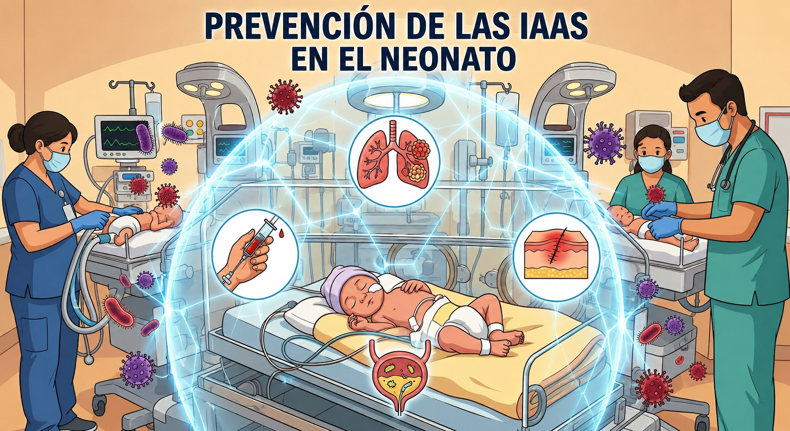

HGZ No. 11 Xalapa
Esta intervención educativa digital tiene como finalidad fortalecer el conocimiento del personal de enfermería sobre la prevención de las Infecciones Asociadas a la Asistencia Sanitaria (IAAS) en pacientes menores de un año.
Consta de un cuestionario inicial (Pre-Test), cinco módulos clínicos, cinco apartados de actualización, y un cuestionario final (Post-Test) para medir el conocimiento adquirido. Su duración estimada es de 45 a 60 minutos.
Su participación es voluntaria. Puede detenerse en cualquier momento sin ninguna consecuencia. La información recabada se utiliza únicamente con fines de investigación y mejora de la práctica clínica, y se maneja de forma confidencial.
Intervención educativa digital
Un mismo instrumento evalúa el conocimiento del personal antes y después de recorrer los módulos clínicos y los apartados de actualización, para medir con precisión el efecto de la capacitación.

Ficha de identificación y cuestionario de conocimiento inicial.
Cinco temas prioritarios de prevención de IAAS, con video y material de apoyo.
Documentos normativos y de práctica aplicables a los cinco módulos clínicos · 0 vistos
Responde estas preguntas como una breve actividad interactiva antes de revisar los recursos.
Recursos de consulta rápida para fármacos, procedimientos y fórmulas útiles en neonatología.
Mismo instrumento de 22 reactivos, aplicado al finalizar la intervención.
Su evaluación fue registrada correctamente. Este es el resumen de su desempeño en la intervención.